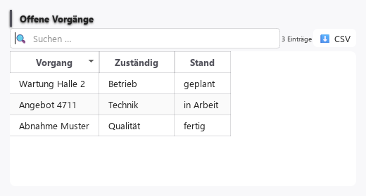

Tabellen: was sie können¶

Fünf Bausteine sind Tabellen: table, data_grid, comparison_table, pivot_table, tree. Was Tabellen können sollten, steht hier als Katalog: 139 Fähigkeiten in 17 Gruppen, zusammengetragen aus zwölf Gestaltungssystemen und Komponenten-Bibliotheken. Je Fähigkeit steht da, was sie bringt, welche Wahl man bei ihr hat und wie weit unsere Bausteine sie heute können.
Auf einen Blick¶
| Baustein | zuschaltbar | fest eingebaut | noch offen | nicht vorgesehen |
|---|---|---|---|---|
| table | 9 | 7 | 123 | 0 |
| data_grid | 9 | 7 | 123 | 0 |
| comparison_table | 9 | 7 | 123 | 0 |
| pivot_table | 9 | 8 | 117 | 5 |
| tree | 0 | 6 | 133 | 0 |
- zuschaltbar — eine Einstellung am Baustein schaltet die Fähigkeit ein, aus oder um.
- fest eingebaut — vorhanden, aber nicht wählbar. Geprüft an einem echt gebauten Baustein, nicht aus dem Programmtext geschlossen.
- noch offen — fehlt. Bringt die Darstellungsbibliothek Qt sie mit, wird sie als Einstellung durchgereicht; sonst wird sie eigens gebaut.
- nicht vorgesehen — passt zu diesem Baustein nicht, mit Grund.
Einschalten¶
Ist eine Fähigkeit zuschaltbar, nennt sie unten ihre Einstellung — das Feld, unter dem Sie sie im Editor des Bausteins finden.
Die fünf Bausteine¶
table¶
Tabellarische Datenansicht mit Sortierung und Filterung
Stand: 9 zuschaltbar · 7 fest eingebaut · 123 noch offen. Steckbrief: Display.
data_grid¶
Daten-Raster mit Spalten (Sortierung, Suche, Export)
Stand: 9 zuschaltbar · 7 fest eingebaut · 123 noch offen. Steckbrief: Data.
comparison_table¶
Vergleichstabelle mit Spalten (Suche, Sortierung, Export)
Stand: 9 zuschaltbar · 7 fest eingebaut · 123 noch offen. Steckbrief: Data.
pivot_table¶
Pivot-Tabelle: verdichtete Kreuztabelle aus Zeilen
Stand: 9 zuschaltbar · 8 fest eingebaut · 117 noch offen · 5 nicht vorgesehen. Steckbrief: Data.
tree¶
Hierarchische Baumansicht (auf-/zuklappbar)
Stand: 0 zuschaltbar · 6 fest eingebaut · 133 noch offen. Steckbrief: Data.
Darstellung¶
Dichte (Zeilenhöhen-Stufen)¶
Man sieht mehr Zeilen auf einmal (eng, zum Vergleichen) oder liest bequemer (luftig).
- Wahl: kompakt / normal / luftig; Umschalter für den Nutzer an/aus
- Verbreitung: in 5 von 12 Quellen — Kernfähigkeit
- Bei uns: noch offen bei allen fünf — wird eigens gebaut
Zebrastreifen¶
Abwechselnd getönte Zeilen helfen, in einer breiten Tabelle in der richtigen Zeile zu bleiben.
- Wahl: aus / an (Farbe aus dem Theme)
- Verbreitung: in 3 von 12 Quellen — häufig
- Bei uns:
- zuschaltbar bei
table,data_grid,comparison_table,pivot_table— Einstellung „Zebrastreifen“ (ab Werk an) - noch offen bei
tree— Qt bringt sie mit, sie wird als Einstellung durchgereicht
- zuschaltbar bei
Gitterlinien / Rahmen¶
Linien trennen Zeilen und Spalten sichtbar voneinander.
- Wahl: keine / nur waagerecht / nur senkrecht / alle; Linienstil
- Verbreitung: in 3 von 12 Quellen — häufig
- Bei uns:
- zuschaltbar bei
table,data_grid,comparison_table,pivot_table— Einstellung „Gitterlinien“ (ab Werk alle) - noch offen bei
tree— Qt bringt sie mit, sie wird als Einstellung durchgereicht
- zuschaltbar bei
Zeilen-Hervorhebung beim Überfahren¶
Die Zeile unter dem Mauszeiger leuchtet auf.
- Wahl: aus / Zeile / Zeile + Zelle
- Verbreitung: in 3 von 12 Quellen — häufig
- Bei uns: noch offen bei allen fünf — Qt bringt sie mit, sie wird als Einstellung durchgereicht
Feste Kopfzeile¶
Die Spaltenüberschriften bleiben beim Herunterrollen sichtbar.
- Wahl: an / aus
- Verbreitung: in 2 von 12 Quellen — häufig
- Bei uns:
- fest eingebaut bei
table,data_grid,comparison_table,pivot_table - noch offen bei
tree— Qt bringt sie mit, sie wird als Einstellung durchgereicht
- fest eingebaut bei
Kopfzeilen ein-/ausblenden¶
Spaltenköpfe und/oder Zeilenköpfe werden gezeigt oder weggelassen.
- Wahl: alle / nur Spaltenkopf / nur Zeilenkopf / keine
- Verbreitung: in 3 von 12 Quellen — häufig
- Bei uns: noch offen bei allen fünf — Qt bringt sie mit, sie wird als Einstellung durchgereicht
Titel, Beschreibung, Fußzeile¶
Die Tabelle sagt, was sie zeigt.
- Wahl: Titel / Beschreibung / Fußzeile, je an/aus
- Verbreitung: in 4 von 12 Quellen — Kernfähigkeit
- Bei uns: noch offen bei allen fünf — wird eigens gebaut
Formatierung nach Datentyp¶
Zahlen, Datum, Ja/Nein und Beträge erscheinen lesbar und landesüblich.
- Wahl: Typ je Spalte: Text / Zahl / Datum / Zeit / Ja-Nein / Auswahl / Betrag; Nachkommastellen; Einheit
- Verbreitung: in 4 von 12 Quellen — Kernfähigkeit
- Bei uns: noch offen bei allen fünf — Qt bringt sie mit, sie wird als Einstellung durchgereicht
Ausrichtung je Spalte¶
Zahlen stehen rechtsbündig untereinander und lassen sich vergleichen; Text steht links.
- Wahl: links / mittig / rechts / automatisch nach Typ; Kopf folgt dem Inhalt
- Verbreitung: in 3 von 12 Quellen — häufig
- Bei uns: noch offen bei allen fünf — Qt bringt sie mit, sie wird als Einstellung durchgereicht
Kürzen mit „…"¶
Zu langer Text wird abgeschnitten, statt die Spalte zu sprengen.
- Wahl: umbrechen / am Ende / in der Mitte / am Anfang kürzen; voller Text als Tooltip
- Verbreitung: in 3 von 12 Quellen — häufig
- Bei uns:
- zuschaltbar bei
table,data_grid,comparison_table,pivot_table— Einstellung „Langen Text kürzen“ (ab Werk Mitte) - fest eingebaut bei
tree(rechts)
- zuschaltbar bei
Bedingte Formatierung¶
Werte, die eine Regel erfüllen, fallen auf (z. B. negative Zahl rot).
- Wahl: Regeln je Spalte: Farbe / Schrift / Symbol; Ziel Zelle oder Zeile
- Verbreitung: in 3 von 12 Quellen — häufig
- Bei uns: noch offen bei allen fünf — Qt bringt sie mit, sie wird als Einstellung durchgereicht
Symbole / Bilder in Zellen¶
Ein Symbol, Avatar oder Vorschaubild macht die Zeile schneller erkennbar.
- Wahl: aus / führendes Symbol / Avatar / Bild; Größe
- Verbreitung: in 4 von 12 Quellen — Kernfähigkeit
- Bei uns: noch offen bei allen fünf — Qt bringt sie mit, sie wird als Einstellung durchgereicht
Bedienelemente in Zellen¶
Knopf, Menü, Schalter oder Fortschrittsbalken direkt in der Zelle.
- Wahl: Art je Spalte; immer sichtbar / nur bei Hover
- Verbreitung: in 5 von 12 Quellen — Kernfähigkeit
- Bei uns: noch offen bei allen fünf — Qt bringt sie mit, sie wird als Einstellung durchgereicht
Zweizeilige Hauptzelle¶
Oben der Name, darunter eine graue Nebeninfo.
- Wahl: aus / an je Spalte
- Verbreitung: in 3 von 12 Quellen — häufig
- Bei uns: noch offen bei allen fünf — Qt bringt sie mit, sie wird als Einstellung durchgereicht
Mini-Diagramm in der Zelle¶
Ein Verlauf auf einen Blick, ohne eigenes Diagramm.
- Wahl: aus / Linie / Balken / Säule / Fläche
- Verbreitung: in 2 von 12 Quellen — häufig
- Bei uns: noch offen bei allen fünf — Qt bringt sie mit, sie wird als Einstellung durchgereicht
Änderungen aufblitzen lassen¶
Ein Wert, der sich gerade geändert hat, leuchtet kurz auf.
- Wahl: aus / an; Dauer
- Verbreitung: in 1 von 12 Quellen — speziell
- Bei uns: noch offen bei allen fünf — wird eigens gebaut
Rechts-nach-links¶
Für Sprachen wie Arabisch erscheint die Tabelle gespiegelt.
- Wahl: automatisch nach Sprache / links-nach-rechts / rechts-nach-links
- Verbreitung: in 2 von 12 Quellen — häufig
- Bei uns: noch offen bei allen fünf — Qt bringt sie mit, sie wird als Einstellung durchgereicht
Farbschema / Theme¶
Die Tabelle folgt hellem oder dunklem Erscheinungsbild der Anwendung.
- Wahl: Theme-Token; hell / dunkel / System
- Verbreitung: in 4 von 12 Quellen — Kernfähigkeit
- Bei uns: noch offen bei allen fünf — Qt bringt sie mit, sie wird als Einstellung durchgereicht
Spalten¶
Spaltenbreite ziehen¶
Man macht eine Spalte mit der Maus am Trenner breiter oder schmaler.
- Wahl: aus / alle Spalten / je Spalte; Mindest- und Höchstbreite
- Verbreitung: in 5 von 12 Quellen — Kernfähigkeit
- Bei uns:
- fest eingebaut bei
table,data_grid,comparison_table,pivot_table - noch offen bei
tree— Qt bringt sie mit, sie wird als Einstellung durchgereicht
- fest eingebaut bei
Breite an Inhalt anpassen¶
Die Spalte wird so breit, dass nichts abgeschnitten ist.
- Wahl: nach Zellen / nach Kopf / nach beidem; beim Laden / per Doppelklick auf Trenner / dauerhaft
- Verbreitung: in 2 von 12 Quellen — häufig
- Bei uns: noch offen bei allen fünf — Qt bringt sie mit, sie wird als Einstellung durchgereicht
Breitenmodus¶
Spalten teilen sich den Platz fest, anteilig oder füllen den Rest.
- Wahl: feste Pixel / anteilig (Gewicht) / letzte füllt Rest / Mindest-/Höchstbreite
- Verbreitung: in 5 von 12 Quellen — Kernfähigkeit
- Bei uns:
- fest eingebaut bei
table,data_grid,comparison_table,pivot_table(Hauptspalte füllt den Rest) - noch offen bei
tree— Qt bringt sie mit, sie wird als Einstellung durchgereicht
- fest eingebaut bei
Spalten umordnen¶
Man bestimmt selbst die Reihenfolge der Spalten.
- Wahl: aus / Ziehen am Kopf / zusätzlich per Menü; erste Spalte fest
- Verbreitung: in 6 von 12 Quellen — Kernfähigkeit
- Bei uns: noch offen bei allen fünf — Qt bringt sie mit, sie wird als Einstellung durchgereicht
Spalten aus- und einblenden¶
Unwichtige Spalten verschwinden, ohne dass Daten verloren gehen.
- Wahl: aus / Spaltenauswahl mit Häkchen / über Kopfmenü; Hinweis „n Spalten ausgeblendet"
- Verbreitung: in 5 von 12 Quellen — Kernfähigkeit
- Bei uns:
- fest eingebaut bei
table,data_grid,comparison_table,pivot_table(Spaltenauswahl mit Häkchen) - noch offen bei
tree— Qt bringt sie mit, sie wird als Einstellung durchgereicht
- fest eingebaut bei
Spalten fixieren¶
Wichtige Spalten bleiben beim Seitwärtsrollen stehen.
- Wahl: keine / links n / rechts n / vom Nutzer wählbar
- Verbreitung: in 6 von 12 Quellen — Kernfähigkeit
- Bei uns: noch offen bei allen fünf — wird eigens gebaut
Spaltengruppen¶
Eine Überschrift steht über mehreren Spalten (zweistufiger Kopf).
- Wahl: aus / Gruppen mit n Ebenen; einklappbar
- Verbreitung: in 4 von 12 Quellen — Kernfähigkeit
- Bei uns: noch offen bei allen fünf — wird eigens gebaut
Zellen verbinden¶
Eine Zelle reicht über mehrere Spalten oder Zeilen.
- Wahl: aus / über Spalten / über Zeilen / beides
- Verbreitung: in 6 von 12 Quellen — Kernfähigkeit
- Bei uns: noch offen bei allen fünf — Qt bringt sie mit, sie wird als Einstellung durchgereicht
Spaltenmenü im Kopf¶
Ein Menü je Spalte bündelt Sortieren, Filtern, Ausblenden, Fixieren.
- Wahl: aus / an; Einträge wählbar
- Verbreitung: in 3 von 12 Quellen — häufig
- Bei uns: noch offen bei allen fünf — wird eigens gebaut
Spaltenerklärung als Tooltip¶
Beim Überfahren der Überschrift erklärt sich die Spalte.
- Wahl: aus / an
- Verbreitung: in 2 von 12 Quellen — häufig
- Bei uns: noch offen bei allen fünf — Qt bringt sie mit, sie wird als Einstellung durchgereicht
Spalten aus den Daten erzeugen¶
Spalten entstehen automatisch aus den Feldern der Daten.
- Wahl: automatisch / fest festgelegt
- Verbreitung: in 2 von 12 Quellen — häufig
- Bei uns: noch offen bei allen fünf — Qt bringt sie mit, sie wird als Einstellung durchgereicht
Berechnete Spalten / Formeln¶
Eine Spalte rechnet aus anderen (z. B. Preis mal Menge).
- Wahl: aus / Ausdruck je Spalte / Formeln wie in einer Tabellenkalkulation
- Verbreitung: in 3 von 12 Quellen — häufig
- Bei uns: noch offen bei allen fünf — wird eigens gebaut
Schmale Ansicht¶
Bei wenig Platz verschwinden Nebenspalten oder die Tabelle wird zur Liste.
- Wahl: aus / Spalten nach Breite ausblenden / Listenansicht
- Verbreitung: in 2 von 12 Quellen — häufig
- Bei uns: noch offen bei allen fünf — wird eigens gebaut
Zeilen¶
Zeilenhöhe¶
Zeilen sind gleich hoch oder so hoch wie ihr Inhalt.
- Wahl: fest / nach Inhalt / vom Nutzer ziehbar
- Verbreitung: in 4 von 12 Quellen — Kernfähigkeit
- Bei uns: noch offen bei allen fünf — Qt bringt sie mit, sie wird als Einstellung durchgereicht
Aufklappbare Detailzeile¶
Unter einer Zeile klappt ein Bereich mit mehr Angaben auf.
- Wahl: aus / per Klick / bei Auswahl / alle offen; „alle auf/zu"; Bereich rollt seitlich mit oder steht
- Verbreitung: in 6 von 12 Quellen — Kernfähigkeit
- Bei uns: noch offen bei allen fünf — wird eigens gebaut
Zeilennummern¶
Eine laufende Nummer am Zeilenanfang.
- Wahl: aus / an
- Verbreitung: in 1 von 12 Quellen — speziell
- Bei uns:
- zuschaltbar bei
table,data_grid,comparison_table,pivot_table— Einstellung „Zeilennummern“ (ab Werk aus) - noch offen bei
tree— Qt bringt sie mit, sie wird als Einstellung durchgereicht
- zuschaltbar bei
Zeilen ziehen zum Umordnen¶
Man ändert die Reihenfolge, indem man eine Zeile an eine andere Stelle zieht.
- Wahl: aus / ganze Zeile / nur am Griff; nur innerhalb / auch in andere Tabelle
- Verbreitung: in 6 von 12 Quellen — Kernfähigkeit
- Bei uns: noch offen bei allen fünf — Qt bringt sie mit, sie wird als Einstellung durchgereicht
Zeilen anheften¶
Bestimmte Zeilen (z. B. Summe, Favorit) bleiben oben oder unten stehen.
- Wahl: keine / oben / unten
- Verbreitung: in 4 von 12 Quellen — Kernfähigkeit
- Bei uns: noch offen bei allen fünf — wird eigens gebaut
Zeile hervorheben ohne Auswahl¶
Eine Zeile ist markiert, etwa die zuletzt geänderte – unabhängig von der Auswahl.
- Wahl: aus / an
- Verbreitung: in 1 von 12 Quellen — speziell
- Bei uns: noch offen bei allen fünf — Qt bringt sie mit, sie wird als Einstellung durchgereicht
Zeile über die volle Breite¶
Eine Zeile ohne Spaltenteilung, etwa für Hinweise oder Abschnitte.
- Wahl: aus / an
- Verbreitung: in 1 von 12 Quellen — speziell
- Bei uns: noch offen bei allen fünf — Qt bringt sie mit, sie wird als Einstellung durchgereicht
Zeilen hinzufügen / löschen¶
Neue Einträge anlegen und alte entfernen.
- Wahl: aus / Knopf / Leerzeile am Ende / Kontextmenü; Fokus nach dem Löschen
- Verbreitung: in 3 von 12 Quellen — häufig
- Bei uns:
- noch offen bei
table,data_grid,comparison_table,tree— Qt bringt sie mit, sie wird als Einstellung durchgereicht - nicht vorgesehen bei
pivot_table— Die Zeilen einer Pivot-Tabelle sind berechnet: geändert wird die Quelle, nicht die Verdichtung.
- noch offen bei
Zeile öffnen¶
Klick oder Enter auf eine Zeile öffnet den Eintrag.
- Wahl: aus / Einfachklick / Doppelklick / Enter
- Verbreitung: in 3 von 12 Quellen — häufig
- Bei uns: noch offen bei allen fünf — Qt bringt sie mit, sie wird als Einstellung durchgereicht
Detail-Seitenbereich¶
Ein Eintrag öffnet sich seitlich; die Tabelle bleibt daneben sichtbar.
- Wahl: aus / rechts / unten
- Verbreitung: in keiner der 12 gezählten Quellen — nur in Gestaltungsratgebern
- Bei uns: noch offen bei allen fünf — wird eigens gebaut
Sortieren¶
Nach einer Spalte sortieren¶
Klick auf die Überschrift ordnet die Daten auf- oder absteigend; ein Pfeil zeigt die Richtung.
- Wahl: aus / je Spalte erlaubt; Klickfolge auf→ab(→aus); Pfeil immer / nur bei Hover
- Verbreitung: in 12 von 12 Quellen — Kernfähigkeit
- Bei uns:
- fest eingebaut bei
table,data_grid,comparison_table,pivot_table - noch offen bei
tree— Qt bringt sie mit, sie wird als Einstellung durchgereicht
- fest eingebaut bei
Sortierung aufheben¶
Ein weiterer Klick stellt die ursprüngliche Reihenfolge wieder her.
- Wahl: zwei Zustände / drei Zustände
- Verbreitung: in 3 von 12 Quellen — häufig
- Bei uns: noch offen bei allen fünf — Qt bringt sie mit, sie wird als Einstellung durchgereicht
Mehrspaltig sortieren¶
Erst nach Ort, innerhalb davon nach Name.
- Wahl: aus / Umschalt- oder Strg-Klick / Sortier-Dialog; Rang sichtbar
- Verbreitung: in 3 von 12 Quellen — häufig
- Bei uns: noch offen bei allen fünf — wird eigens gebaut
Vorgabe-Sortierung¶
Beim Öffnen sind die Daten schon sinnvoll geordnet, etwa Neueste zuerst.
- Wahl: Spalte + Richtung
- Verbreitung: in 3 von 12 Quellen — häufig
- Bei uns: noch offen bei allen fünf — Qt bringt sie mit, sie wird als Einstellung durchgereicht
Sprachgerechte Sortierung¶
„Ä" steht bei „A", Groß- und Kleinschreibung verhalten sich wie erwartet.
- Wahl: Groß/Klein beachten ja/nein; sprachgerecht ja/nein; Zahlen natürlich (2 vor 10)
- Verbreitung: in 1 von 12 Quellen — speziell
- Bei uns: noch offen bei allen fünf — Qt bringt sie mit, sie wird als Einstellung durchgereicht
Filtern & Suchen¶
Globale Suche¶
Ein Suchfeld durchsucht alle Spalten auf einmal.
- Wahl: aus / Feld immer sichtbar / Lupe zum Aufklappen
- Verbreitung: in 4 von 12 Quellen — Kernfähigkeit
- Bei uns:
- zuschaltbar bei
table,data_grid,comparison_table,pivot_table— Einstellung „Suchfeld“ (ab Werk an) - noch offen bei
tree— Qt bringt sie mit, sie wird als Einstellung durchgereicht
- zuschaltbar bei
Filter je Spalte¶
Man zeigt pro Spalte nur bestimmte Werte.
- Wahl: aus / Menü im Kopf / Filterzeile / Filterpanel
- Verbreitung: in 4 von 12 Quellen — Kernfähigkeit
- Bei uns: noch offen bei allen fünf — Qt bringt sie mit, sie wird als Einstellung durchgereicht
Filterzeile unter dem Kopf¶
Eingabefelder stehen direkt unter den Überschriften.
- Wahl: aus / an
- Verbreitung: in 2 von 12 Quellen — häufig
- Bei uns: noch offen bei allen fünf — wird eigens gebaut
Filter nach Datentyp¶
Text „enthält", Zahl „größer als", Datum „zwischen".
- Wahl: Text / Zahl / Datum / Werteliste / Baum
- Verbreitung: in 2 von 12 Quellen — häufig
- Bei uns: noch offen bei allen fünf — wird eigens gebaut
Werteliste wie in Excel¶
Häkchenliste aller vorkommenden Werte, mit eigenem Suchfeld.
- Wahl: aus / an; mit Suche
- Verbreitung: in 2 von 12 Quellen — häufig
- Bei uns: noch offen bei allen fünf — wird eigens gebaut
Bedingungen verknüpfen¶
Mehrere Filter werden mit UND/ODER kombiniert.
- Wahl: eine Bedingung / mehrere / Filter-Baukasten
- Verbreitung: in 2 von 12 Quellen — häufig
- Bei uns: noch offen bei allen fünf — wird eigens gebaut
Schnellfilter-Knöpfe¶
Vorbereitete Filter mit einem Klick, z. B. „nur offene".
- Wahl: aus / Liste festgelegter Filter
- Verbreitung: in 2 von 12 Quellen — häufig
- Bei uns: noch offen bei allen fünf — Qt bringt sie mit, sie wird als Einstellung durchgereicht
„Filter aktiv" + Zurücksetzen¶
Man sieht, dass gefiltert ist, und setzt alles mit einem Klick zurück.
- Wahl: Hinweis an/aus; Zurücksetzen-Knopf
- Verbreitung: in 1 von 12 Quellen — speziell
- Bei uns: noch offen bei allen fünf — wird eigens gebaut
Facetten¶
Neben jedem Filterwert steht, wie oft er vorkommt.
- Wahl: aus / an
- Verbreitung: in 1 von 12 Quellen — speziell
- Bei uns: noch offen bei allen fünf — wird eigens gebaut
Suchen und Treffer hervorheben¶
Fundstellen leuchten in den Zellen auf; man springt von Treffer zu Treffer.
- Wahl: aus / hervorheben / hervorheben + springen
- Verbreitung: in 2 von 12 Quellen — häufig
- Bei uns: noch offen bei allen fünf — wird eigens gebaut
Tipp-Suche¶
Wer lostippt, springt zur ersten Zeile, die so beginnt.
- Wahl: aus / an; Vergleichsart
- Verbreitung: in keiner der 12 gezählten Quellen — nur in Gestaltungsratgebern
- Bei uns: noch offen bei allen fünf — Qt bringt sie mit, sie wird als Einstellung durchgereicht
Auswählen¶
Auswahlmodus¶
Man markiert keine, eine oder mehrere Zeilen.
- Wahl: keine / eine / mehrere mit Strg/Umschalt / nur zusammenhängend / mehrere per Einzelklick
- Verbreitung: in 10 von 12 Quellen — Kernfähigkeit
- Bei uns:
- zuschaltbar bei
table,data_grid,comparison_table,pivot_table— Einstellung „Auswahl“ (ab Werk einzeln) - fest eingebaut bei
tree(einzeln)
- zuschaltbar bei
Kontrollkästchen-Spalte + „Alle"¶
Häkchen je Zeile, oben eines für alle, mit Teil-Zustand.
- Wahl: aus / Kontrollkästchen / Optionsfeld; „alle" = Seite oder alle Daten; Kästchen nur bei Hover
- Verbreitung: in 5 von 12 Quellen — Kernfähigkeit
- Bei uns: noch offen bei allen fünf — wird eigens gebaut
Auswahleinheit¶
Man markiert Zeilen, Spalten oder einzelne Zellen.
- Wahl: Zeile / Spalte / Zelle
- Verbreitung: in 4 von 12 Quellen — Kernfähigkeit
- Bei uns:
- zuschaltbar bei
table,data_grid,comparison_table,pivot_table— Einstellung „Ausgewählt wird“ (ab Werk zeile) - fest eingebaut bei
tree(zeile)
- zuschaltbar bei
Zellbereich aufziehen¶
Ein Rechteck von Zellen markieren, wie in Excel.
- Wahl: aus / an; mehrere Bereiche
- Verbreitung: in 3 von 12 Quellen — häufig
- Bei uns: noch offen bei allen fünf — Qt bringt sie mit, sie wird als Einstellung durchgereicht
Alles auswählen¶
Ein Griff markiert alles.
- Wahl: Strg+A / Eck-Knopf / aus
- Verbreitung: in 1 von 12 Quellen — speziell
- Bei uns: noch offen bei allen fünf — Qt bringt sie mit, sie wird als Einstellung durchgereicht
Auswahl über Seiten behalten¶
Beim Blättern bleiben Häkchen auf anderen Seiten erhalten.
- Wahl: aus / an
- Verbreitung: in 1 von 12 Quellen — speziell
- Bei uns: noch offen bei allen fünf — wird eigens gebaut
Sammelaktionen¶
Nach dem Markieren erscheint eine Leiste mit Befehlen für alle markierten Einträge.
- Wahl: aus / Leiste oben / unten; Zähler „3 ausgewählt"; Abbrechen
- Verbreitung: in 3 von 12 Quellen — häufig
- Bei uns: noch offen bei allen fünf — wird eigens gebaut
Ziehgriff zum Ausfüllen¶
Man setzt einen Wert in Nachbarzellen fort, indem man am Eckpunkt zieht.
- Wahl: aus / an
- Verbreitung: in 2 von 12 Quellen — häufig
- Bei uns:
- noch offen bei
table,data_grid,comparison_table,tree— wird eigens gebaut - nicht vorgesehen bei
pivot_table— Die Zeilen einer Pivot-Tabelle sind berechnet: geändert wird die Quelle, nicht die Verdichtung.
- noch offen bei
Bearbeiten in der Zelle¶
In der Zelle bearbeiten¶
Man ändert einen Wert direkt in der Tabelle.
- Wahl: aus / je Spalte / je Zelle
- Verbreitung: in 6 von 12 Quellen — Kernfähigkeit
- Bei uns:
- noch offen bei
table,data_grid,comparison_table,tree— Qt bringt sie mit, sie wird als Einstellung durchgereicht - nicht vorgesehen bei
pivot_table— Die Zeilen einer Pivot-Tabelle sind berechnet: geändert wird die Quelle, nicht die Verdichtung.
- noch offen bei
Auslöser der Bearbeitung¶
Wie man in den Bearbeitungsmodus kommt.
- Wahl: Doppelklick / F2 / Enter / Lostippen / Klick auf markierte Zelle / sofort beim Fokus / nie
- Verbreitung: in 3 von 12 Quellen — häufig
- Bei uns: noch offen bei allen fünf — Qt bringt sie mit, sie wird als Einstellung durchgereicht
Ganze Zeile bearbeiten¶
Eine Zeile geht als Ganzes in Bearbeitung und wird mit Speichern/Abbrechen beendet.
- Wahl: Zelle / Zeile
- Verbreitung: in 4 von 12 Quellen — Kernfähigkeit
- Bei uns:
- noch offen bei
table,data_grid,comparison_table,tree— wird eigens gebaut - nicht vorgesehen bei
pivot_table— Die Zeilen einer Pivot-Tabelle sind berechnet: geändert wird die Quelle, nicht die Verdichtung.
- noch offen bei
Zellen-Editoren nach Typ¶
Passende Eingabe: Zahlenfeld, Datumswahl, Klappliste, Häkchen.
- Wahl: Text / langer Text / Zahl / Datum / Zeit / Ja-Nein / Auswahl / Mehrfachauswahl / Autovervollständigen / Passwort
- Verbreitung: in 4 von 12 Quellen — Kernfähigkeit
- Bei uns: noch offen bei allen fünf — Qt bringt sie mit, sie wird als Einstellung durchgereicht
Eigener Editor¶
Für besondere Werte ein eigenes Eingabeelement, z. B. Farbwähler oder Sterne.
- Wahl: je Spalte
- Verbreitung: in 4 von 12 Quellen — Kernfähigkeit
- Bei uns: noch offen bei allen fünf — Qt bringt sie mit, sie wird als Einstellung durchgereicht
Schreibschutz¶
Manche Spalten oder Zellen sind nur lesbar.
- Wahl: ganze Tabelle / Spalte / Zelle
- Verbreitung: in 3 von 12 Quellen — häufig
- Bei uns: noch offen bei allen fünf — Qt bringt sie mit, sie wird als Einstellung durchgereicht
Abbrechen stellt den alten Wert her¶
Esc verwirft die Eingabe.
- Wahl: an (Vorgabe)
- Verbreitung: in 2 von 12 Quellen — häufig
- Bei uns: noch offen bei allen fünf — Qt bringt sie mit, sie wird als Einstellung durchgereicht
Rückgängig / Wiederholen¶
Versehentliche Änderungen lassen sich zurücknehmen.
- Wahl: aus / an; Tiefe
- Verbreitung: in 3 von 12 Quellen — häufig
- Bei uns: noch offen bei allen fünf — wird eigens gebaut
Erst sammeln, dann speichern¶
Änderungen werden gesammelt und gemeinsam übernommen oder verworfen.
- Wahl: sofort speichern / sammeln
- Verbreitung: in 1 von 12 Quellen — speziell
- Bei uns: noch offen bei allen fünf — wird eigens gebaut
Eingabe umwandeln¶
„1,5" wird zur Zahl 1.5, ein Kürzel zum vollständigen Wert.
- Wahl: Umwandler je Spalte
- Verbreitung: in 2 von 12 Quellen — häufig
- Bei uns: noch offen bei allen fünf — Qt bringt sie mit, sie wird als Einstellung durchgereicht
Kommentare an Zellen¶
Man heftet eine Notiz an eine Zelle.
- Wahl: aus / an
- Verbreitung: in 2 von 12 Quellen — häufig
- Bei uns: noch offen bei allen fünf — wird eigens gebaut
Eingaben prüfen¶
Prüfung je Zelle mit Fehleranzeige¶
Falsche Eingaben werden sofort markiert und nicht gespeichert.
- Wahl: aus / nur Warnung / Speichern blockieren
- Verbreitung: in 4 von 12 Quellen — Kernfähigkeit
- Bei uns: noch offen bei allen fünf — Qt bringt sie mit, sie wird als Einstellung durchgereicht
Prüfung je Zeile mit Fehlerliste¶
Zusammenhänge zwischen Feldern werden geprüft, Fehler gesammelt angezeigt.
- Wahl: aus / an
- Verbreitung: in 2 von 12 Quellen — häufig
- Bei uns: noch offen bei allen fünf — wird eigens gebaut
Prüfung im Hintergrund¶
Eine Prüfung gegen einen Dienst, ohne die Oberfläche zu blockieren.
- Wahl: aus / an
- Verbreitung: in 1 von 12 Quellen — speziell
- Bei uns: noch offen bei allen fünf — wird eigens gebaut
Datenmenge¶
Seitenweise anzeigen¶
Die Daten erscheinen in Seiten zu n Zeilen.
- Wahl: aus / einfach (vor/zurück) / erweitert (Zeilen je Seite, Sprung zu Seite); Position unten
- Verbreitung: in 8 von 12 Quellen — Kernfähigkeit
- Bei uns: noch offen bei allen fünf — wird eigens gebaut
Nachladen beim Rollen¶
Weitere Zeilen kommen, wenn man ans Ende rollt.
- Wahl: aus / an; Blockgröße
- Verbreitung: in 3 von 12 Quellen — häufig
- Bei uns: noch offen bei allen fünf — Qt bringt sie mit, sie wird als Einstellung durchgereicht
Virtualisierung¶
Auch sehr viele Zeilen bleiben flüssig, weil nur Sichtbares erzeugt wird.
- Wahl: an / aus; Zeilen / Spalten
- Verbreitung: in 5 von 12 Quellen — Kernfähigkeit
- Bei uns: noch offen bei allen fünf — Qt bringt sie mit, sie wird als Einstellung durchgereicht
Verarbeitung auf dem Server¶
Sortieren, Filtern und Gruppieren übernimmt der Server.
- Wahl: Client / Server
- Verbreitung: in 5 von 12 Quellen — Kernfähigkeit
- Bei uns: noch offen bei allen fünf — Qt bringt sie mit, sie wird als Einstellung durchgereicht
Live-Aktualisierung¶
Werte ändern sich laufend, ohne dass die Tabelle neu lädt.
- Wahl: aus / an; Takt
- Verbreitung: in 3 von 12 Quellen — häufig
- Bei uns: noch offen bei allen fünf — Qt bringt sie mit, sie wird als Einstellung durchgereicht
Zeilen-Animation¶
Zeilen gleiten beim Umsortieren an ihren neuen Platz.
- Wahl: aus / an
- Verbreitung: in 1 von 12 Quellen — speziell
- Bei uns: noch offen bei allen fünf — wird eigens gebaut
Seitwärts rollen bei breiten Tabellen¶
Breite Tabellen rollen seitlich, statt gequetscht zu werden; ein Hinweis zeigt, dass es weitergeht.
- Wahl: an; Hinweis (angeschnittene Spalte / Pfeile)
- Verbreitung: in 3 von 12 Quellen — häufig
- Bei uns: fest eingebaut bei allen fünf
Gruppieren / Summen / Pivot¶
Nach Spalte gruppieren¶
Zeilen mit gleichem Wert stehen unter einer aufklappbaren Überschrift.
- Wahl: aus / eine Ebene / mehrere Ebenen; Gruppen auf/zu
- Verbreitung: in 4 von 12 Quellen — Kernfähigkeit
- Bei uns: noch offen bei allen fünf — wird eigens gebaut
Gruppier-Leiste¶
Man zieht eine Spalte in eine Leiste, um danach zu gruppieren.
- Wahl: aus / an
- Verbreitung: in 1 von 12 Quellen — speziell
- Bei uns: noch offen bei allen fünf — wird eigens gebaut
Zusammenfassen je Gruppe¶
Summe, Durchschnitt oder Anzahl je Gruppe.
- Wahl: aus / Funktion je Spalte (Summe, Mittel, Min., Max., Anzahl, eigene)
- Verbreitung: in 3 von 12 Quellen — häufig
- Bei uns: noch offen bei allen fünf — wird eigens gebaut
Summenzeile¶
Eine Zeile am Ende zeigt die Gesamtwerte.
- Wahl: aus / unten / oben; fixiert
- Verbreitung: in 4 von 12 Quellen — Kernfähigkeit
- Bei uns: noch offen bei allen fünf — wird eigens gebaut
Pivot¶
Werte aus Zeilen werden zu Spalten gedreht (Kreuztabelle).
- Wahl: aus / an
- Verbreitung: in 2 von 12 Quellen — häufig
- Bei uns:
- noch offen bei
table,data_grid,comparison_table,tree— wird eigens gebaut - fest eingebaut bei
pivot_table
- noch offen bei
Kennzahlen zur Markierung¶
Unten stehen Summe, Anzahl, Durchschnitt der markierten Zellen.
- Wahl: aus / an; Kennzahlen wählbar
- Verbreitung: in 1 von 12 Quellen — speziell
- Bei uns: noch offen bei allen fünf — wird eigens gebaut
Diagramm aus den Daten¶
Markierte Daten werden als Diagramm gezeigt.
- Wahl: aus / an
- Verbreitung: in 3 von 12 Quellen — häufig
- Bei uns: noch offen bei allen fünf — wird eigens gebaut
Baum- / Hierarchie-Daten¶
Baumdaten¶
Zeilen haben Unterzeilen, die man auf- und zuklappt.
- Wahl: aus / an; Einrückung; Klick auf Zeile klappt auf
- Verbreitung: in 7 von 12 Quellen — Kernfähigkeit
- Bei uns:
- noch offen bei
table,data_grid,comparison_table,pivot_table— Qt bringt sie mit, sie wird als Einstellung durchgereicht - fest eingebaut bei
tree
- noch offen bei
Alles auf/zu, bis Ebene n¶
Die ganze Hierarchie öffnet oder schließt sich mit einem Griff.
- Wahl: aus / alle / bis Ebene n; Startzustand
- Verbreitung: in 3 von 12 Quellen — häufig
- Bei uns: noch offen bei allen fünf — Qt bringt sie mit, sie wird als Einstellung durchgereicht
Kinder bei Bedarf laden¶
Unterzeilen kommen erst beim Aufklappen.
- Wahl: aus / an
- Verbreitung: in 3 von 12 Quellen — häufig
- Bei uns: noch offen bei allen fünf — Qt bringt sie mit, sie wird als Einstellung durchgereicht
Filtern im Baum¶
Ein Treffer zeigt auch die übergeordneten Zeilen.
- Wahl: aus / Eltern zeigen / Kinder mitnehmen
- Verbreitung: in 2 von 12 Quellen — häufig
- Bei uns: noch offen bei allen fünf — Qt bringt sie mit, sie wird als Einstellung durchgereicht
Auswahl in der Hierarchie¶
Ein Häkchen am Elternteil markiert alle Kinder.
- Wahl: gekoppelt / unabhängig
- Verbreitung: in 2 von 12 Quellen — häufig
- Bei uns: noch offen bei allen fünf — wird eigens gebaut
Baumzeilen umhängen¶
Eine Zeile wird per Ziehen unter einen anderen Elternteil gelegt.
- Wahl: aus / an
- Verbreitung: in 1 von 12 Quellen — speziell
- Bei uns: noch offen bei allen fünf — Qt bringt sie mit, sie wird als Einstellung durchgereicht
Export / Import / Kopieren / Einfügen / Drucken¶
Kopieren¶
Markierte Zeilen oder Zellen kommen in die Zwischenablage und lassen sich in Excel einfügen.
- Wahl: aus / Zeilen / Zellbereich; mit Überschriften
- Verbreitung: in 3 von 12 Quellen — häufig
- Bei uns: noch offen bei allen fünf — wird eigens gebaut
Einfügen¶
Daten aus Excel werden in die Tabelle eingefügt.
- Wahl: aus / an; mit Prüfung
- Verbreitung: in 3 von 12 Quellen — häufig
- Bei uns:
- noch offen bei
table,data_grid,comparison_table,tree— wird eigens gebaut - nicht vorgesehen bei
pivot_table— Die Zeilen einer Pivot-Tabelle sind berechnet: geändert wird die Quelle, nicht die Verdichtung.
- noch offen bei
Export CSV¶
Die Tabelle wird als CSV-Datei gespeichert.
- Wahl: aus / alle / sichtbare / markierte Zeilen
- Verbreitung: in 4 von 12 Quellen — Kernfähigkeit
- Bei uns:
- zuschaltbar bei
table,data_grid,comparison_table,pivot_table— Einstellung „CSV-Export“ (ab Werk an) - noch offen bei
tree— wird eigens gebaut
- zuschaltbar bei
Export Excel¶
Als Excel-Datei mit Formaten.
- Wahl: aus / an
- Verbreitung: in 3 von 12 Quellen — häufig
- Bei uns: noch offen bei allen fünf — wird eigens gebaut
Export PDF¶
Als PDF speichern.
- Wahl: aus / an
- Verbreitung: in 3 von 12 Quellen — häufig
- Bei uns: noch offen bei allen fünf — wird eigens gebaut
Drucken¶
Die Tabelle wird gedruckt.
- Wahl: aus / an; Spaltentitel auf jeder Seite
- Verbreitung: in 2 von 12 Quellen — häufig
- Bei uns: noch offen bei allen fünf — wird eigens gebaut
Import¶
Eine CSV- oder Excel-Datei wird eingelesen.
- Wahl: aus / Datei wählen / Datei hineinziehen
- Verbreitung: in 2 von 12 Quellen — häufig
- Bei uns: noch offen bei allen fünf — wird eigens gebaut
Ziehen zwischen Tabellen¶
Zeilen in eine andere Tabelle oder ein anderes Programm ziehen.
- Wahl: aus / nur ziehen / nur ablegen / beides
- Verbreitung: in 1 von 12 Quellen — speziell
- Bei uns: noch offen bei allen fünf — Qt bringt sie mit, sie wird als Einstellung durchgereicht
Text in der Zelle markieren¶
Man markiert mit der Maus einen Teil des Zelltexts.
- Wahl: aus / an
- Verbreitung: in 1 von 12 Quellen — speziell
- Bei uns: noch offen bei allen fünf — wird eigens gebaut
Kontextmenü & Zeilen-Aktionen¶
Kontextmenü¶
Rechtsklick zeigt passende Befehle.
- Wahl: aus / Standardbefehle / eigene Einträge
- Verbreitung: in 2 von 12 Quellen — häufig
- Bei uns: noch offen bei allen fünf — Qt bringt sie mit, sie wird als Einstellung durchgereicht
Aktionen an der Zeile¶
Bearbeiten oder Löschen direkt an der Zeile.
- Wahl: Symbolknöpfe / Überlaufmenü „…" / nur bei Hover und Fokus
- Verbreitung: in 4 von 12 Quellen — Kernfähigkeit
- Bei uns: noch offen bei allen fünf — Qt bringt sie mit, sie wird als Einstellung durchgereicht
Werkzeugleiste¶
Eine Leiste über der Tabelle für Suche, Filter, Export und Einstellungen.
- Wahl: aus / an; Inhalte wählbar
- Verbreitung: in 5 von 12 Quellen — Kernfähigkeit
- Bei uns: noch offen bei allen fünf — wird eigens gebaut
Seitenleiste mit Panels¶
Eine ausklappbare Leiste verwaltet Spalten und Filter.
- Wahl: aus / Spalten / Filter / eigene
- Verbreitung: in 2 von 12 Quellen — häufig
- Bei uns: noch offen bei allen fünf — wird eigens gebaut
Tastaturbedienung & Barrierefreiheit¶
Pfeiltasten von Zelle zu Zelle¶
Man bewegt sich ohne Maus durch die Tabelle.
- Wahl: je Zelle / je Zeile / aus
- Verbreitung: in 5 von 12 Quellen — Kernfähigkeit
- Bei uns: fest eingebaut bei allen fünf
Sprungtasten¶
Pos1/Ende zum Zeilenrand, Strg+Pos1/Ende zur ersten/letzten Zelle, Bild auf/ab seitenweise.
- Wahl: an
- Verbreitung: in 2 von 12 Quellen — häufig
- Bei uns: noch offen bei allen fünf — Qt bringt sie mit, sie wird als Einstellung durchgereicht
Tab-Verhalten¶
Tab verlässt die Tabelle (ein Tab-Halt) oder springt von Zelle zu Zelle.
- Wahl: ein Tab-Halt / Tab durch Zellen
- Verbreitung: in 1 von 12 Quellen — speziell
- Bei uns: noch offen bei allen fünf — Qt bringt sie mit, sie wird als Einstellung durchgereicht
Auswahl per Tastatur¶
Umschalt+Pfeil erweitert, Umschalt+Leertaste wählt die Zeile, Strg+A alles.
- Wahl: an / aus
- Verbreitung: in 2 von 12 Quellen — häufig
- Bei uns: noch offen bei allen fünf — Qt bringt sie mit, sie wird als Einstellung durchgereicht
Sortieren per Tastatur¶
Enter auf einer Überschrift sortiert.
- Wahl: an
- Verbreitung: in 3 von 12 Quellen — häufig
- Bei uns: noch offen bei allen fünf — wird eigens gebaut
Bearbeiten per Tastatur¶
Enter oder F2 öffnet, Esc bricht ab, Enter bestätigt.
- Wahl: an
- Verbreitung: in 2 von 12 Quellen — häufig
- Bei uns: noch offen bei allen fünf — Qt bringt sie mit, sie wird als Einstellung durchgereicht
Eigene Tastenkürzel¶
Häufige Befehle bekommen eigene Kürzel.
- Wahl: aus / Liste
- Verbreitung: in 1 von 12 Quellen — speziell
- Bei uns: noch offen bei allen fünf — Qt bringt sie mit, sie wird als Einstellung durchgereicht
Bildschirmleser¶
Blinde Nutzer hören Spalte, Zeile und Sortierstatus.
- Wahl: an
- Verbreitung: in 6 von 12 Quellen — Kernfähigkeit
- Bei uns: noch offen bei allen fünf — Qt bringt sie mit, sie wird als Einstellung durchgereicht
Touch¶
Mit dem Finger rollen, auswählen, Spalten ziehen.
- Wahl: an
- Verbreitung: in 4 von 12 Quellen — Kernfähigkeit
- Bei uns: noch offen bei allen fünf — wird eigens gebaut
Lokalisierung¶
Texte, Zahlen- und Datumsformate erscheinen in der Sprache des Nutzers.
- Wahl: Sprache / Gebietsschema
- Verbreitung: in 4 von 12 Quellen — Kernfähigkeit
- Bei uns: noch offen bei allen fünf — Qt bringt sie mit, sie wird als Einstellung durchgereicht
Zustände¶
Leer¶
Statt einer leeren Fläche steht ein Hinweis, wenn es keine Daten gibt.
- Wahl: Text / Bild / Aktion („Ersten Eintrag anlegen")
- Verbreitung: in 5 von 12 Quellen — Kernfähigkeit
- Bei uns: noch offen bei allen fünf — wird eigens gebaut
Keine Treffer¶
Ein eigener Hinweis, wenn Filter alles ausblenden – mit „Filter zurücksetzen".
- Wahl: Text / Zurücksetzen-Knopf
- Verbreitung: in 2 von 12 Quellen — häufig
- Bei uns: noch offen bei allen fünf — wird eigens gebaut
Lädt¶
Man sieht, dass Daten unterwegs sind.
- Wahl: Kreisel / Balken / Skelett-Zeilen; Inhalt abgeblendet
- Verbreitung: in 7 von 12 Quellen — Kernfähigkeit
- Bei uns: noch offen bei allen fünf — wird eigens gebaut
Fehler beim Laden¶
Laden schlug fehl – Meldung und „Erneut versuchen".
- Wahl: aus / an; automatische Wiederholung
- Verbreitung: in 1 von 12 Quellen — speziell
- Bei uns: noch offen bei allen fünf — wird eigens gebaut
Keine Spalten¶
Ein Hinweis, wenn alle Spalten ausgeblendet sind.
- Wahl: aus / an
- Verbreitung: in 1 von 12 Quellen — speziell
- Bei uns: noch offen bei allen fünf — wird eigens gebaut
Export läuft¶
Ein Hinweis während eines langen Exports.
- Wahl: aus / an
- Verbreitung: in 1 von 12 Quellen — speziell
- Bei uns: noch offen bei allen fünf — wird eigens gebaut
Ansicht speichern¶
Spaltenstand merken¶
Breite, Reihenfolge und Sichtbarkeit sind beim nächsten Öffnen wieder da.
- Wahl: aus / für die Sitzung / dauerhaft
- Verbreitung: in 3 von 12 Quellen — häufig
- Bei uns: noch offen bei allen fünf — Qt bringt sie mit, sie wird als Einstellung durchgereicht
Sortierung und Filter merken¶
Auch Sortierung und Filter kommen beim nächsten Öffnen wieder.
- Wahl: aus / an
- Verbreitung: in 2 von 12 Quellen — häufig
- Bei uns: noch offen bei allen fünf — wird eigens gebaut
Auf Standard zurücksetzen¶
Eigene Anpassungen lassen sich mit einem Klick verwerfen.
- Wahl: aus / an
- Verbreitung: in 1 von 12 Quellen — speziell
- Bei uns: noch offen bei allen fünf — wird eigens gebaut
Benannte Ansichten¶
Mehrere gespeicherte Sichten („Meine offenen", „Alle") zum Umschalten.
- Wahl: aus / an
- Verbreitung: in keiner der 12 gezählten Quellen — nur in Gestaltungsratgebern
- Bei uns: noch offen bei allen fünf — wird eigens gebaut
Sonstiges¶
Tooltips für Zellen¶
Beim Überfahren zeigt sich der volle Wert oder eine Erklärung.
- Wahl: aus / voller Text / eigener Inhalt
- Verbreitung: in 2 von 12 Quellen — häufig
- Bei uns: noch offen bei allen fünf — Qt bringt sie mit, sie wird als Einstellung durchgereicht
Gekoppelte Tabellen¶
Zwei Tabellen rollen gemeinsam.
- Wahl: aus / an
- Verbreitung: in 2 von 12 Quellen — häufig
- Bei uns: noch offen bei allen fünf — wird eigens gebaut
Vollbild¶
Die Tabelle nimmt die ganze Fläche ein, alles andere tritt zurück.
- Wahl: aus / an
- Verbreitung: in keiner der 12 gezählten Quellen — nur in Gestaltungsratgebern
- Bei uns: noch offen bei allen fünf — wird eigens gebaut
Sprungleiste A–Z¶
Eine Buchstabenleiste am Rand springt zu Abschnitten.
- Wahl: aus / an
- Verbreitung: in 1 von 12 Quellen — speziell
- Bei uns: noch offen bei allen fünf — wird eigens gebaut
KI-Funktionen¶
KI-Kennzeichnung oder ein Assistent, der Filter und Sortierung aus einer Frage baut.
- Wahl: aus / nur Kennzeichnung / Assistent
- Verbreitung: in 2 von 12 Quellen — häufig
- Bei uns: noch offen bei allen fünf — wird eigens gebaut
Mehrere bearbeiten gleichzeitig¶
Änderungen anderer erscheinen sofort, Konflikte werden behandelt.
- Wahl: aus / an
- Verbreitung: in 1 von 12 Quellen — speziell
- Bei uns: noch offen bei allen fünf — wird eigens gebaut
Weiches Rollen¶
Rollen pixelweise statt Zeile für Zeile.
- Wahl: je Zeile / je Pixel
- Verbreitung: in keiner der 12 gezählten Quellen — nur in Gestaltungsratgebern
- Bei uns:
- zuschaltbar bei
table,data_grid,comparison_table,pivot_table— Einstellung „Weiches Rollen“ (ab Werk aus) - noch offen bei
tree— Qt bringt sie mit, sie wird als Einstellung durchgereicht
- zuschaltbar bei
Diese Seite wird aus dem Fähigkeitskatalog der Plattform erzeugt (scripts/typenkatalog_erzeugen.py). Ändert ein Ausbauschritt, was ein Baustein kann, fällt eine veraltete Fassung bei der nächsten Prüfung auf.